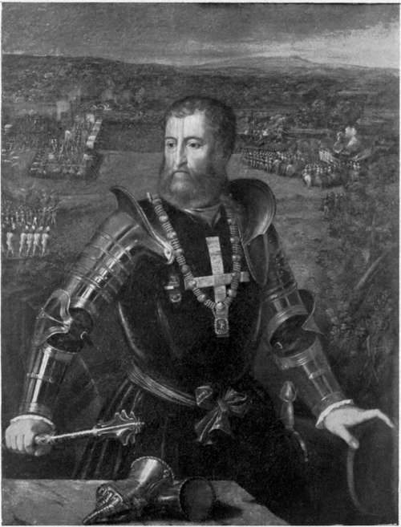

The Letter To Silvio Savelli. Part 3
Description
This section is from the book "The Life Of Cesare Borgia", by Rafael Sabatini. Also available from Amazon: The Life of Cesare Borgia.
The Letter To Silvio Savelli. Part 3
The narrative, too, is oddly suspiciously circumstantial, even to the unimportant detail of the particular gate by which the peasants entered Rome. In a piece of fiction it is perfectly natural to fill in such minor details to the end that the picture shall be complete ; but they are rare in narratives of fact. And one may be permitted to wonder how came the Master of Ceremonies at the Vatican to know the precise gate by which those peasants came. It is not as we have seen the only occasion on which an excess of detail in the matter of a gate renders suspicious the accuracy of a story of Burchard's.
Both these affairs find a prominent place in the Letter to Silvio Savelli. Indeed Gregorovius cites the pamphlet as one of the authorities to support Burchard, and to show that what Burchard wrote must have been true; the other authority he cites is Matarazzo, disregarding not only the remarkable discrepancy between Matarazzo's relation and that of Burchard, but the circumstance that the matter of that pamphlet became current throughout Italy, and that it was thus and only thus that Matarazzo came to hear of the scandal.1
The Letter to Silvio Savelli opens by congratulating him upon his escape from the hands of the robbers who had stripped him of his possessions, and upon his having found a refuge in Germany at the Emperor's Court. It proceeds to marvel that thence he should have written letters to the Pope begging for justice and reinstatement, his wonder being at the credulity of Savelli in supposing that the Pope " betrayer of the human race, who has spent his life in betrayals " will ever do any just thing other than through fear or force. Rather does the writer suggest the adoption of other methods; he urges Savelli to make known to the Emperor and all princes of the Empire the atrocious crimes of that " infamous wild beast," which have been perpetrated in contempt of God and religion. He then proceeds to relate these crimes. Alexander, Cesare, and Lucrezia, among others of the Borgia family, bear their share of the formidable accusations. Of the Pope are related perfidies, simonies, and ravishments ; against Lucrezia are urged the matter of her incest, the supper of the fifty courtesans, and the scene of the stallions ; against Cesare there are the death of Biselli, the murder of Pedro Caldes, the ruin of the Romagna, whence he has driven out the legitimate lords, and the universal fear in which he is held.
1 The frequency with which the German historian cites Matarazzo as an authority is oddly inconsistent, considering that when he finds Matarazzo's story of the murder of the Duke of Gandia upsetting the theory which Gregorovius himself prefers, by fastening the guilt upon Giovanni Sforza, he devotes some space to showing with perfect justice that Matarazzo is no authority at all.
It is, indeed, a compendium of all the stories which from Milan, Naples, and Venice the three States where the Borgias for obvious reasons are best hated have been disseminated by their enemies, and a more violent work of rage and political malice was never uttered. This malice becomes particularly evident in the indictment of Cesare for the ruin of the Romagna. Whatever Cesare might have done, he had not done that his bitterest detractor could not (without deliberately lying) say that the Romagna was other than benefiting under his sway. That is not a matter of opinion, not a matter of inference or deduction. It is a matter of absolute fact and irrefutable knowledge.
To return now to the two entries in Burchard's Diarium when considered in conjunction with the Letter to Silvio Savelli (which Burchard quotes in full), it is remarkable that nowhere else in the discovered writings of absolute contemporaries is there the least mention of either of those scandalous stories. The affair of the stallions, for instance, must have been of a fairly public character. Scandal mongering Rome could not have resisted the dissemination of it. Yet, apart from the Savelli letter, no single record of it has been discovered to confirm Burchard.
At this time, moreover, it is to be remembered, Lucrezia's betrothal to Alfonso d'Este was already accomplished; preparations for her departure and wedding were going forward, and the escort from Ferrara was daily expected in Rome. If Lucrezia had never been circumspect, she must be circumspect now, when the eyes of Italy were upon her, and there were not wanting those who would have been glad to have thwarted the marriage the object, no doubt, of the pamphlet we are considering. Yet all that was written to Ferrara was in praise of her in praise of her goodness and her modesty, her prudence, her de voutness, and her discretion, as presently we shall see.
If from this we are to conclude as seems reasonable that there was no gossip current in Rome of the courtesans' supper and the rest, we may assume that there was no knowledge in Rome of such matters ; for with knowledge silence would have been impossible. So much being admitted, it becomes a matter of determining whether the author of the Letter to Silvio Savelli had access to the diary of Burchard for his facts, or whether Burchard availed himself of the Letter to Silvio Savelli to compile these particular entries. The former alternative being out of the question, there but remains the latter unless it is possible that the said entries have crept into the copies of the " Diarium " and are not present in the original, which is not available.
This theory of interpolation, tentatively put forward, is justified, to some extent at least, by the following remarkable circumstances: that two such entries, having as we have said absolutely no parallel in the whole of the Diarium, should follow almost immediately the one upon the other; and that Burchard should relate them coldly, without reproof or comment of any kind a most unnatural reticence in a writer who loosed his indignation one Eastertide to see Lucrezia and her ladies occupying the choir of St. Peter's, where women never sat.
The Pope read the anonymous libel when it was submitted to him by the Cardinal of Modena read it, laughed it to scorn, and treated it with the contempt which it deserved, yet a contempt which, considering its nature, asks a certain greatness of mind.
If the libel was true it is almost incredible that he should not have sought to avenge it, for an ugly truth is notoriously hurtful and provocative of resentment, far more so than is a lie. Cesare, however, was not of a temper quite as long suffering as his father. Enough and more of libels and lampoons had he endured already. Early in December a masked man a Neapolitan of the name of Mancioni who had been going through Rome uttering infamies against him was seized and so dealt with that he should in future neither speak nor write anything in any man's defamation. His tongue was cut out and his right hand chopped off, and the hand, with the tongue attached to its little finger, was hung in sight of all and as a warning from a window of the Church of Holy Cross.
And towards the end of January, whilst Cesare's fury at that pamphlet out of Germany was still un appeased, a Venetian was seized in Rome for having translated from Greek into Latin another libel against the Pope and his son. The Venetian ambassador intervened to save the wretch, but his intervention was vain. The libeller was executed that same night.
Costabili the Ferrara ambassador who spoke to the Pope on the matter of this execution, reported that his Holiness said that more than once had he told the duke that Rome was a free city, in which any one was at liberty to say or write what he pleased ; that of himself, too, much evil was being spoken, but that he paid no heed to it.
" The duke," proceeded Alexander, " is good natured, but he has not yet learnt to bear insult." And he added that, irritated, Cesare had protested that, " However much Rome may be in the habit of speaking and writing, for my own part I shall give these libellers a lesson in good manners."
The lesson he intended was not one they should live to practise.
ALFONSO D'ESTE, DUKE OF FERRARA. (From the portrait by Dosso Dossi.)
Continue to:
- prev: The Letter To Silvio Savelli. Part 2
- Table of Contents
- next: Chapter XII. Lucrezia's Third Marriage